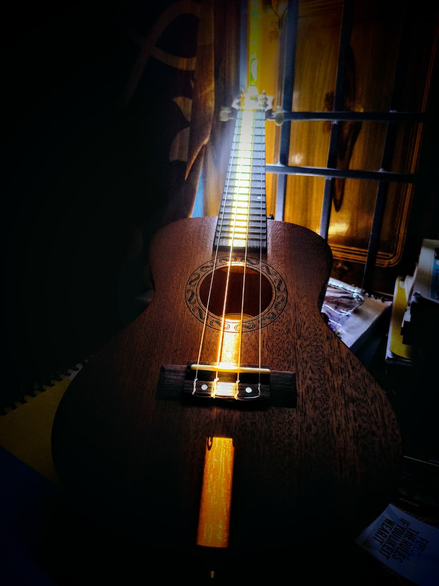

Roots & Perspective
From Hajipur to New Delhi
Carrying the warmth and resilience of my hometown in Bihar into the fast-paced cultural life of New Delhi, while staying curious about global languages and new horizons.
Someone shaped by stories, languages, and old-school melodies—finding meaning in good books, casual music, and high-speed race weekends.


I hail from Hajipur, Bihar—a town rich in history, warmth, and grounded values—and I am currently based in New Delhi. For most of my school years, I was trained to look at the world through a rigid, analytical lens. Over time, however, I realized that what truly excites me isn't staying inside a single predictable track—it is exploring how languages, cultures, human stories, and digital ideas connect people across the world.
Music has been with me through almost every phase of that journey. Growing up, I spent years learning Indian classical vocals, the harmonium, and the tabla. Even though I stepped away from formal classical practice a few years ago, that early bond with music never faded—now it simply means singing for my own peace of mind or picking up my self-taught ukulele whenever I want to unwind.
When I am not exploring a new language or building something on my laptop, you will usually find me deep inside a novel from my bookshelf, listening to 70s–90s ghazals and classic rock, watching football, or riding the emotional highs and lows of a Formula 1 weekend.
Carrying the warmth and resilience of my hometown in Bihar into the fast-paced cultural life of New Delhi, while staying curious about global languages and new horizons.
From Russian classics like Dostoevsky to philosophical fiction and thrillers, reading gives me access to minds and lives beyond my own and leaves me with better questions.

Shaped by an early foundation in Indian classical music, I now sing and strum my ukulele simply for the comfort of participating in music rather than only hearing it through earphones.